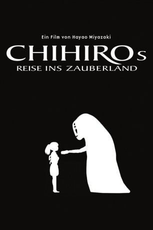

#847 Chihiros Reise ins Zauberland
Alternativ: Spirited Away (Englischer Titel)
Auszeichnungen: 1 Oscars gewonnen
 
 IMDB-Wertung: 8.6 / 10
IMDB-Wertung: 8.6 / 10  IMDB-TOP-Platzierung: 27
IMDB-TOP-Platzierung: 27  Metascore: 96
Metascore: 96 
Als die kleine Chihiro mit ihren Eltern während eines Ausflugs einen dunklen Tunnel durchquert, ahnt sie noch nicht, was sie auf der anderen Seite erwarten wird. Denn dort liegt eine für Menschen normalerweise unsichtbare Stadt der Geister. Zu allem Übel muss Chihiro dann auch noch feststellen, dass sich ihre Eltern in Schweine verwandelt haben und sie selbst plötzlich unsichtbar zu werden scheint...
Jahr: 2001
Dauer: 125 Minuten
FSK: 0
Land: Japan Studio: Constantin FilmTonspuren:
Untertitel:
Auflösung: 1080p (1920x1040) Größe: 6062 MB
Genre: Animation/Trick, Abenteuer, Familie, Fantasy, Mystery
Regisseur: Hayao Miyazaki, Kirk Wise
Drehbuch: Hayao Miyazaki
Soundtrack: Joe Hisaishi
Darsteller:
Datei: X:\Kinder Anime\Studio Ghibli\Chihiros Reise ins Zauberland (2001, FSKo.Al., 1920x1040).mkv seit 31.03.2015
Festplatte: Kinder-Filme+Trick
 Es gibt insgesamt 27 Filme in der Gruppe 'Kinder Anime\Studio Ghibli'
Es gibt insgesamt 27 Filme in der Gruppe 'Kinder Anime\Studio Ghibli'